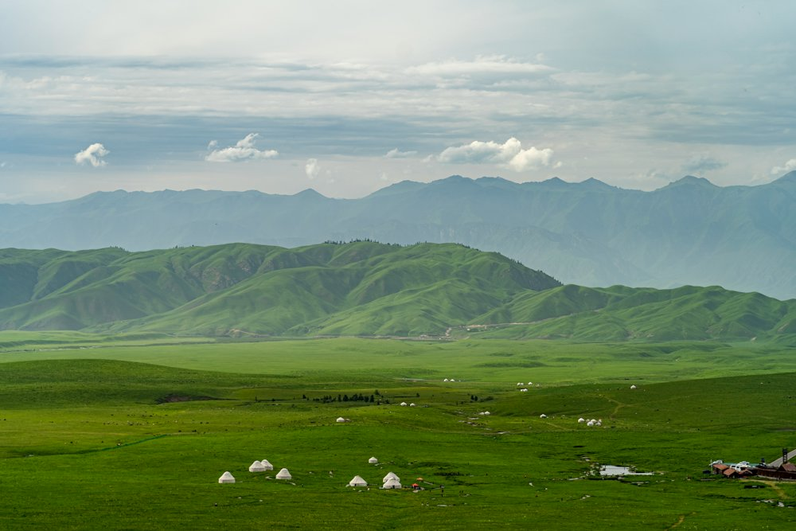

自然历年规律东北
呼伦贝尔草原
Hulunbuir Grassland · 内蒙古 · 呼伦贝尔
最佳时间
6 – 8 月绿色旺季；7 月野花与那达慕最多
5 月返青、9 月转黄，最佳绿色窗口 6 月下旬 – 8 月上旬。
世界四大草原之一：莫日格勒河九曲十八弯，白桦与湿地把天路铺向边境。
不能错过
- 莫日格勒河老舍笔下「天下第一曲水」制高点必去
- 恩和/室韦俄罗斯族民族乡木刻楞过夜
当地美食
手把肉呼伦贝尔羊无膻味，清水煮见真章
布里亚特包子俄蒙混血包子，牛肉圆葱馅爆汁
铁锅炖江鱼额尔古纳河冷水鱼炖豆腐
蓝莓酱+列巴大兴安岭野生蓝莓，俄式早餐
旅人提醒
- 草原蚊虫多，长裤+驱蚊液必备
- 自驾里程长，加油站间距远，见站就加
月度热力与气温
-17°
1
-12°
2
-2°
3
11°
4
20°
5
25°
6
27°
7
25°
8
18°
9
8°
10
-6°
11
-14°
12
适宜度（柱高，5=最佳）依据活动窗口与气候整理；气温为月均高温近似值（°C），仅供规划参考，出行前请查当地预报。
编辑核实笔记 · 整理自呼伦贝尔市公开资料，非亲历；以牧区实际为准。
预订 / 官网
官方页面：查看官网 / 官方信息 ↗ · 票价与预约以官网为准
联盟链接含占位 tracking id（Booking/Klook/Trip.com），上线替换为真实 ID 即生效；均带 utm 参数与点击统计。